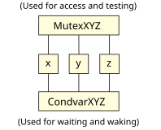

Another common situation that occurs in multi-threaded programs is the need for a thread to wait until something happens. This something could be anything! It could be the fact that data is now available from a device, or that a conveyor belt has now moved to the proper position, or that data has been committed to disk, or whatever. Another twist to throw in here is that several threads may need to wait for the given event.
To accomplish this, you can use condition variables. A good design uses multiple mutexes, one for each data set, and explicitly combine them with condition variables as required. The true power and danger of this approach is that there is absolutely no compile- or runtime-checking to make sure that you:
The easiest way around these problems is to have this good design and a design review, and to borrow techniques from object-oriented programming (like having the mutex contained in a data structure, having routines to access the data structure, etc.). Of course, how much of one or both you apply depends not only on your personal style, but also on performance requirements.
The key points to remember when using condvars are:
Here's a picture:

Let's set up an example. One thread is a producer thread that's getting data from some piece of hardware. The other thread is a consumer thread that's doing some form of processing on the data that just arrived:
/*
* cp1.c
*/
#include <stdio.h>
#include <pthread.h>
int data_ready = 0;
pthread_mutex_t mutex = PTHREAD_MUTEX_INITIALIZER;
pthread_cond_t condvar = PTHREAD_COND_INITIALIZER;
void * consumer (void *notused)
{
printf ("In consumer thread...\n");
while (1) {
pthread_mutex_lock (&mutex);
while (!data_ready) {
pthread_cond_wait (&condvar, &mutex);
}
// process data
printf ("consumer: got data from producer\n");
data_ready = 0;
pthread_cond_signal (&condvar);
pthread_mutex_unlock (&mutex);
}
}
void * producer (void *notused)
{
printf ("In producer thread...\n");
while (1) {
// get data from hardware
// we'll simulate this with a sleep (1)
sleep (1);
printf ("producer: got data from h/w\n");
pthread_mutex_lock (&mutex);
while (data_ready) {
pthread_cond_wait (&condvar, &mutex);
}
data_ready = 1;
pthread_cond_signal (&condvar);
pthread_mutex_unlock (&mutex);
}
}
main ()
{
printf ("Starting consumer/producer example...\n");
// create the producer and consumer threads
pthread_create (NULL, NULL, producer, NULL);
pthread_create (NULL, NULL, consumer, NULL);
// let the threads run for a bit
sleep (20);
}
In the example above, the pthread_cond_t data type is the declaration of the condition variable; we've called ours condvar.
The consumer has to lock and unlock the mutex because the mutex ensures mutual exclusion to the data_ready variable. This means that we want to lock out the producer from touching the data_ready variable while we're testing it. But, if we don't do the unlock part of the operation, the producer would never be able to set the variable to tell us that data is indeed available! The re-lock operation is done purely as a convenience so that the user of the pthread_cond_wait() doesn't have to worry about the state of the lock when the consumer wakes up.
The producer locks the mutex to obtain exclusive access to set the data_ready variable. Keep in mind that the client doesn't wake up because you set data_ready to 1, but rather because of the call made to pthread_cond_signal().